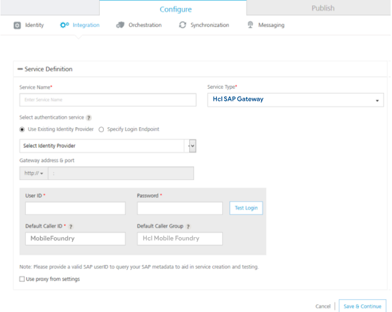
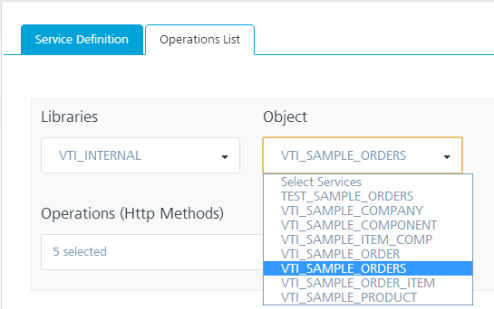

Configure an SAP Service
With Volt MX Foundry, you can access external Volt MX SAP services by using the Volt MX SAP Gateway connector. Based on your Volt MX SAP Gateway authentication, you can use Volt MX SAP libraries and objects along with the supported HTTP methods in your app.
Adding a Volt MX SAP Gateway service involves the following steps:
Configure a New Volt MX SAP Gateway
Edit or Test an Existing Volt MX SAP Gateway Integration Service
Mapping the Service Output to Widgets on a Form.
Configure a New Volt MX SAP Gateway
This procedure assumes that you have already configured Volt MX Foundry in Volt MX Iris. To configure your Volt MX SAP Gateway, follow these steps:
- In Volt MX Iris, open either an existing application or create a new one.
- If you have not done so already, log in to your Volt MX account. To do so, in the top right corner of the Volt MX Iris window, click Login. The Volt MX Account sign-in window opens. Enter your email and password credentials for your Volt MX user account, and then click Sign in.
-
Create a new Volt MX Foundry application or use an existing one. To do so, on the Data and Services panel, click the context menu arrow, and then click either Create New App, or Use Existing App, and then select from the Volt MX Foundry Application dialog box the services application that you want to publish. The Volt MX Foundry Console opens.

Note: If you want to associate your Volt MX Iris project with a different Volt MX Foundry app, on the Project tab of the Project Explorer, click the context menu arrow for VoltMX Foundry, and then click Unlink App. To link to a different Volt MX Foundry app, click the context menu arrow for VoltMX Foundry, and then click either Create New App, or Use Existing App.
-
To create a new integration service, on the Integration tab, click CONFIGURE NEW. The Service Definition section appears.

-
In the Integration tab, click CONFIGURE NEW to create an integration service.

-
In the Service Definition section, follow these steps:
- In the Service Name text box, enter a unique name for your service.
-
From the Service Type list, select VoltMX SAP gateway.
By default, XML is selected. If you select VoltMX SAP gateway, the Select authentication service section is displayed, shown below. -
Under Select authentication service, click Specify Login Endpoint:
- Use Existing Identity Provider - to select an identity provider. This drop-down lists all identity providers if you have already created identity providers for SAP in the Identity page.
- Specify Login Endpoint- to configure a new endpoint.
To configure Specify Log-in Endpoint, fill in the details for the following fields:
-
In the Gateway address, enter the domain - for example, connect.voltmx.com_._
-
In the Port text box, enter a valid port number ranging from 1 to 65535.
-
In the Header parameter name prefix * text box, enter the header - for example, VoltMXSAP.
-
Under the User ID and Password, provide valid log-in credentials that you created while registering with Volt MX SAP Gateway services.
-
In the Default Caller ID, provide the ID that Volt MX SAP Gateway uses for logging and auditing.
-
In the Default Caller Group, provide the ID that Volt MX SAP Gateway uses for logging and auditing. This information is optional.

-
Click the Advanced tab to specify API throttling. All options in the Advanced section are optional.
-
API throttling enables you to limit the number of request calls within a minute. If an API exceeds the throttling limit, the API will not return the service response.
To specify throttling, follow these steps:-
In the Total Rate Limit text box, enter a required value. With this value, you can limit the number of requests configured in your Volt MX Foundry console in terms of Total Rate Limit.
-
In the Rate Limit Per IP text box, enter a required value. With this value, you can limit the number of IP address requests configured in your Volt MX Foundry console in terms of Per IP Rate Limit.
To override throttling, refer to Override API Throttling Configuration.
Note: In case of On-premises, the number of nodes in a clustered environment is set by configuring the
VOLTMX_SERVER_NUMBER_OF_NODESproperty in the Admin Console. This property indicates the number of nodes configured in the cluster. The default value is 1.
Refer to The Runtime Configuration tab on the Settings screen of App Services.The total limit set in the Volt MX Foundry Console will be divided by the number of configured nodes. For example, a throttling limit of 600 requests/minute with three nodes will be calculated to be 200 requests/minute per node.
This is applicable for Cloud and On-premises.
-
-
-
To enable the proxy, select the Use proxy from settings check box. By default, the check box is cleared.
The Use proxy from settings check box dims when no proxy is configured under the Settings > Proxy -
After you configure the authentication service, click Save .
-
Click Operations List tab. Based on your Volt MX SAP Gateway authentication, the system loads all tables such as libraries and objects along with supported HTTP methods
-
Select a library form the Libraries list. The objects of the selected library will be loaded in the Objects list.
-
Select an object from the Objects list.

In the Operation list, select an operation or select all the operations.

-
To configure more operations for your Volt MX SAP Gateway integration service, repeat steps a through b. You can select a new library and object, and supported operations.
-
Click Add Operation. The system adds your operation under the Configured Operations section, and it also adds your new Volt MX SAP Gateway service into the Integration page.

-
-
To configure operations, under Operations > Configured Operations, hover your cursor over the required service, click the Settings button, and then click Edit.
The operation details are displayed.

-
In the Name box, modify the name if required.
- Select one of the following security operations in the Operation Security Level field. By default, this field is set to Authenticated App User.
- Authenticated App User – indicates that this operation is secured. To use this operation, an app user must be authenticated by an associated identity service.
- Anonymous App User – indicates that a user must have the app key and app secret to access this operation.
- Public – indicates that this operation requires no special security.
-
In the Operation Path box, modify the path if required.
Note: You can add an entry by clicking the Add button if entries for the input and the advanced tabs do not exist. You can also delete an existing entry by clicking the Delete button.
-
In the Request Input tab, provide the following information:
- The ID field contains a unique identifier for a parameter. Change the identifier if required.
- The Test value field contains a value to be used to test the service. Change the syntax if required.
- In the Default value field, change the syntax if required.
- Click Test to view the results.
You can add more properties to an input parameter such as scope and data types by following the below step. Otherwise, proceed to Step 14. -
To add more properties, click the Edit button. The Input Parameter Modal dialog appears.
-
Select request or session in the Scope field. By default, this field is set to Request.
-
Request - indicates that the value must be retrieved from the HTTP request received from the mobile device.
-
Session - indicates that the value must be retrieved from the HTTP session stored on Volt MX Foundry.
-
-
Select a data type in the Datatype field:
- String - a combination of alpha-numeric and special characters. Supports all formats including UTF-8 and UTF-16 with no maximum size limit.
-
Boolean - a value that can be true or false.
-
Number - an integer or a floating number.
-
Collection - a group of data, also referred to as data set.
-
Select the Encode check box to enable an input parameter to be encoded. For example, the name New York Times would be encoded as New_York_Times when the encoding is set to True. The encoding must also adhere to the HTML URL encoding standards.
- Click Submit. The input parameter is saved with additional properties.
- Click the Attributes tab to view schema. This is a meta-data schema for which user has configured at Volt MX SAP. The schema is in XML format.
-
For example, the schema includes elements for the configured tables, such as, table name, description, library name, group name, URL, methods.

-
Click the Response Output tab to view the output test values, such as ID, scope, data type. You cannot edit these values.
-
Based on the operation - for example, post or get - provide custom HTTP headers.
To provide customer headers, click Advanced. In the Test values text box, provide custom HTTP headers required by the external data source, shown below: -
ID: The rows are created based on the selected operation. Change the value if required.
-
Test value: Enter a value. A test value is used for testing the service.
-
Click Save Operation to save the operation. They system displays the Operation section for your service.
- Click Done to navigate to the Integration page.
- To close the Volt MX Foundry Console and return to the panes, views, and tabs of the Volt MX Iris integrated development environment (IDE), from the Quick Launch Bar along the upper left edge of Volt MX Iris, click the Workspace icon
 . Since you are still logged in to your Volt MX account, Volt MX Iris continues to have access to your Volt MX Foundry services.
. Since you are still logged in to your Volt MX account, Volt MX Iris continues to have access to your Volt MX Foundry services.
Edit or Test an Existing Volt MX SAP Gateway Integration Service
If you want to edit an existing Volt MX SAP service, you can edit details such as service name, authentication service information, operations.
Each operation contains four tabs, including input, attributes, output, and advanced. If you want to test an existing operation for Volt MX SAP service - for example, get or put - enter necessary test values in the input and the advanced tabs. The results are displayed in the JSON format. The input values can be data types, test values, and session keys.
To edit or test an existing Volt MX SAP integration service, follow these steps:
- In the Integration page, click one of your SAP services.
- Make the necessary changes in the Service Definition and Operations sections. You can test an operation by inputting values.
- Click Done to save the changes. The system displays the Integration page.
Configure a Identity Provider
To configure a identity provider and use it in creating a service, follow these steps:
- In Volt MX Iris, launch the Volt MX Foundry console.
- In the Identity tab, create a new identity service and save it.
- Navigate to the Integration tab, configure a new service.
- In the Select Authentication Service section, select Use Existing Identity Provider button. The Select Identity Provider list appears.
- Select the identity service from list. This list is populated with the identity providers created in the Identity tab.
- Provide information in all the fields and click Save.